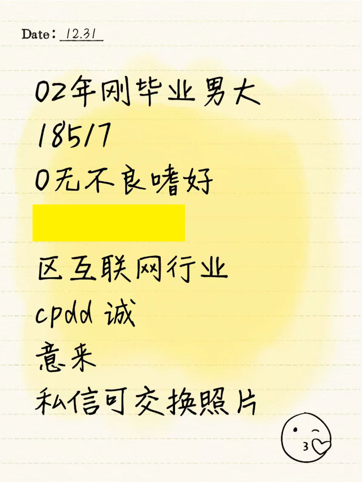

程序员如何找对象？如何聊天？
前两天一个粉丝问我，码农如何找对象？
其实码农不码农我感觉无所谓，做什么职业跟一个健全的人其实关系不是很大。相反我觉得程序员可能还有点优势，就是你智商肯定在点线，不然你也敲不了代码，性格和情商方面，刻意训练下就很能打。
然后我觉得你要去找对象的话首先不能太内向，然后就是要会聊天，不能太自我。
当然你内向的话也可能会有对象，但是概率相对很小。
对于大部分人来说你内向不主动去找的话，想有对象就是在等一场入室抢劫般的爱情，很难。
形体习惯这些觉得自己哪里不好能改变的就去改变自己，改变不了的就接纳自己
虽然说我对这个也不懂，但是我朋友多啊。然后我就问了一问，把大家说的总结了下：
- 社交软件：抖音，小红书
- 相亲软件：青藤
- 朋友介绍：
- 线下活动：爱好：爬山，剧本杀，桌游，羽毛球
线上交友的话，自我介绍和照片几乎是必要的。线下就是注意自己的形象。怎么介绍自己的这种东西就看你自己发挥了，不行还有AI军师。或者是模仿别人的。这里我在小红书找了一个，大家可以当作借鉴。
怎么聊天？聊天最简单了，聊天就是情商高点，就是夸，要夸的不动声色，夸得千方百计，夸的一针见血。没人不喜欢会说话的。真诚是必杀技。遇到不会回答的截个图发给豆包就行了，直接说：怎么回复。
然后就是多聊。不小心聊黄了下一个小心点。遇到聊不下去的很正常，就是要多试。聊一个你患得患失，聊多个谁没给你发消息你都不知道。
没有天赋，那就反复！在实践中自己去悟。
直到并不难，难的是做到！
最难的不是知道方法论，而是做到。
尽管想象很美好，但是做起来就会发现困难重重。
现在看到视频的想找对象的程序员，立刻马上找自己能放出来的照片，写自己的自我介绍。然后去小红书发文章
